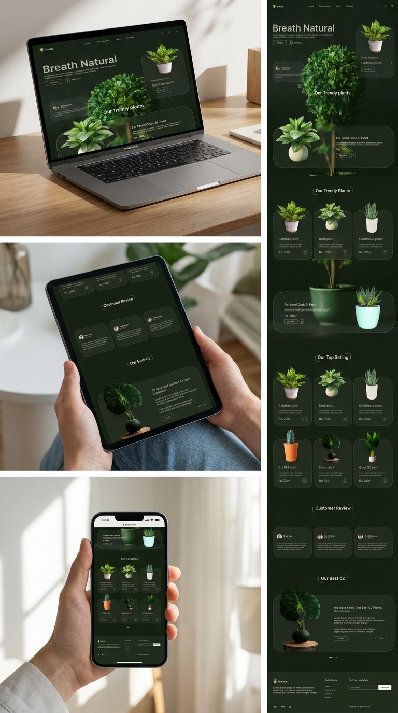
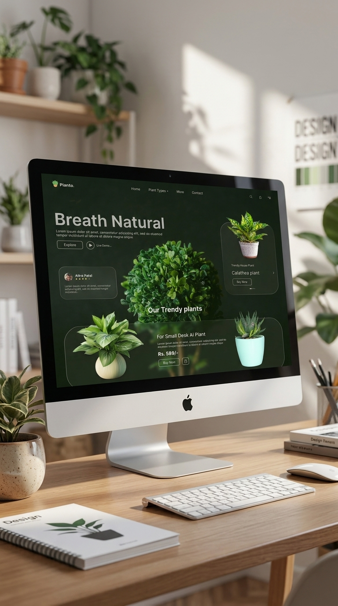
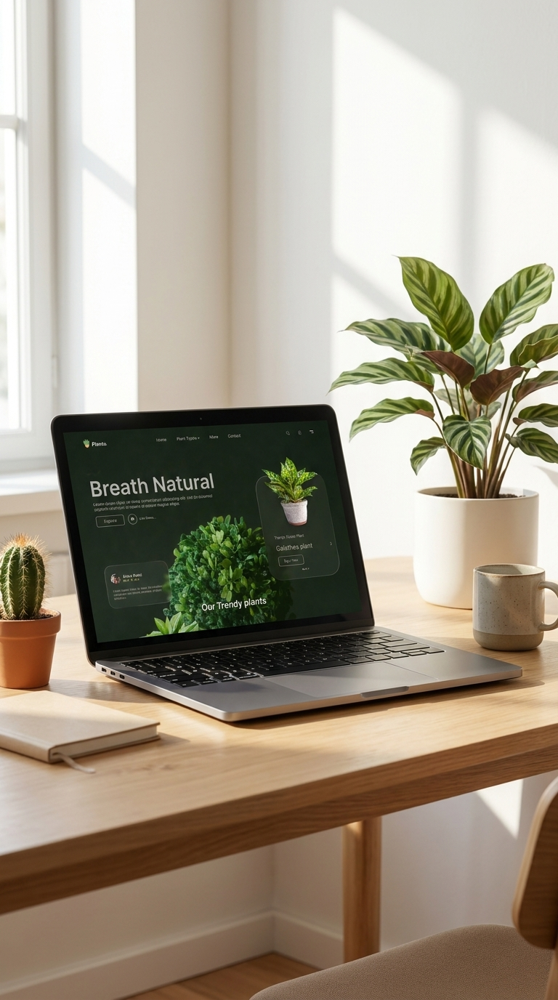

Atmospheric Hero
The dark botanical background and “Breathe Natural” display headlines establish a premium, natural brand identity immediately.
A premium plant shopping experience that uses a dark botanical atmosphere, glass product panels, and customer-focused layouts to make indoor gardening feel aspirational.

High-impact typography and deep green shadows setting the natural tone.

Glassmorphic tiles displaying plants, pricing, and compact buy triggers.

Clean, airy desktop grid layout highlighting trending oxygen collections.
Planto is designed as a rich, long-form landing page for contemporary plant lovers. The experience opens with a dark leafy botanical hero block, then guides shoppers through trending plant lists, top-selling grid items, customer reviews, and a dedicated oxygen plant segment.
The layout uses translucent cards, soft borders, and generous margins to create a peaceful plant-care shopping environment while maintaining strong call-to-actions.
Design Approach
The dark botanical background and “Breathe Natural” display headlines establish a premium, natural brand identity immediately.
Semi-transparent cards keep the viewport layered and premium while maintaining clarity in product names and pricing.
Strategic placements of reviews, benefits, and plant descriptions build customer trust before reaching checkout.
Large-scale leafy photography anchors the first viewport, framed by clean navigation, icons, and featured tags.
Product tiles employ consistent grids, rounded frosted glass layers, visible price points, and mini cart triggers.
Lower sections integrate user proof, botanical benefits, and newsletter triggers for an editorial shopping journey.
Outcome
Planto showcases the designer's ability to develop a full web layout system: merging brand story, botanical artwork, glassmorphism UI elements, product cards, and responsive bento grids into a high-fidelity landing page.
Back to Projects